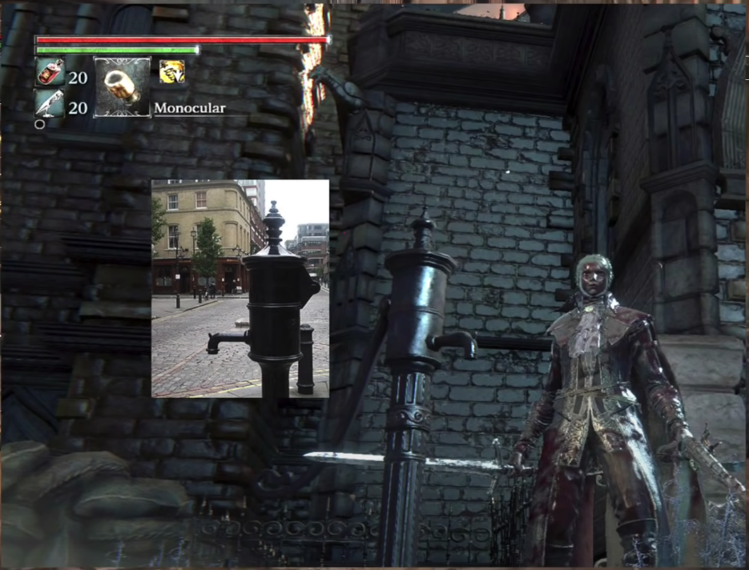
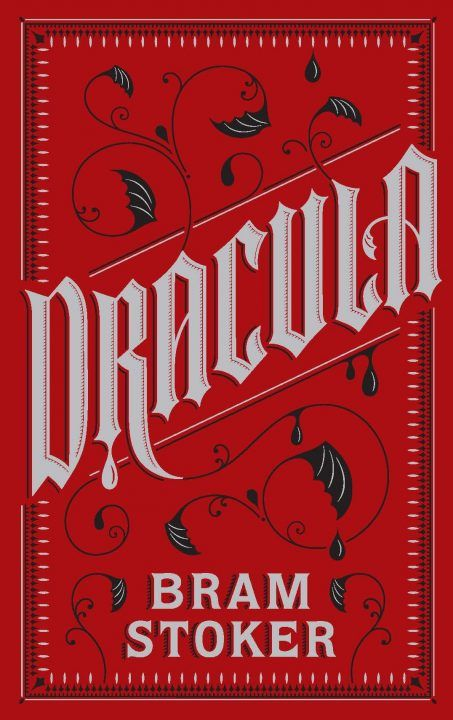

HISTORIAS QUE MERECEN SER CONTADAS: CURIOSIDADES DE BLOODBORNE
Luego de haber visto cada aspecto, tanto tecnico como en el sentido de historia, ahora revisaremos curiosidades, datos interesantes y divertidos de........
Bloodborne
1-En Yharnam central, una de las primeras zonas del juego, se encuentra una replica exacta de una fuente publica que existe actualmente en la ciudad de Londresen Broad Street (Actual Broadwick Street) dicha fuente, famosa por ser el epicentro de una de las mayores epidemias de colera que azoto a Londres en el siglo XIV

2-Mucha gente piensa erradamente que el titulo del juego, Bloodborne, significa nacido de la sangre. En realidad es un termino medico utilizado para referirse a todas las
enfermedades que se transmiten a traves de la sangre
4-La llegada a la zona opcional de Carcust es en parte un tributo a la pelicula de 1992 de "Dracula" de Francis Ford Coppola y a la novela homonima de Bram Stoker.Además, el Castillo y otros tantos elementos dan a saber la influencia de la literatura gotica en Bloodborne.

5-Si conseguimos la caja de música de un de las hijas del Padre Gascoigne y la utilizamos durante la pelea contra el, este se atuidira por los recuerdos que le suscita la melodia y podremos aprovechar para bajarle gran cantidad de vida. 6-Hay una zona secreta del juego que no mucha gente logra encontrar y es una replica exacta del Sueño del Cazador, ya que es el lugar original de donde esta inspirado el Sueño. Además podremos encontrar a la muñeca y un tercio de cordon umbilical.Replica
Sueño del Cazador
7-Hay varias referencias a Demon´s Souls. Una de ellas es que el Padre Gascoigne al matarnos dice la palabra "Umbasa", palabra que utlizaban los clerigos con el mismo objetivo con el que, en el cristianismo, se utiliza la palabra Amén o Dios te bendiga8-A mayor Lucidez, mas rapidos y agresivos seran los jefes a los que nos enfrentemos llegando incluso a aleatorizar sus ataques (cosa que por experiencia personal....es horrible)
9-Si seguimos la mision de las hijas de Gascoigne veremos uno de los finales mas deprimentes donde una de las hijas es devorada por un cerdo gigante cerca de su casa y la otra yace tendida en el suelo muerta tambien alrededor de su hogar (No se sabe si se suicido o alguien o algo la empujo).